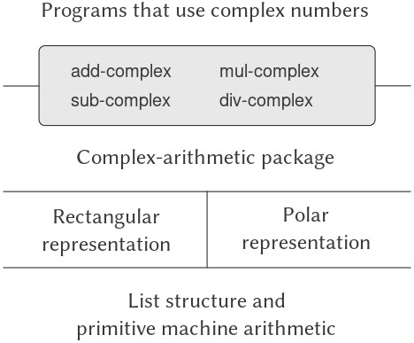

2.4 Nhiều cách biểu diễn cho Abstract Data (dữ liệu trừu tượng)
Chúng ta đã giới thiệu data abstraction (trừu tượng hóa dữ liệu), một phương pháp luận để cấu trúc hệ thống sao cho phần lớn chương trình có thể được đặc tả độc lập với các lựa chọn liên quan đến việc hiện thực các data object (đối tượng dữ liệu) mà chương trình thao tác.
Ví dụ, trong 2.1.1 chúng ta đã thấy cách tách biệt nhiệm vụ thiết kế một chương trình sử dụng rational numbers (số hữu tỉ) khỏi nhiệm vụ hiện thực rational numbers dựa trên các cơ chế nguyên thủy của ngôn ngữ máy tính để xây dựng compound data (dữ liệu phức hợp).
Ý tưởng then chốt là dựng nên một abstraction barrier (rào chắn trừu tượng) – trong trường hợp này là các selector (bộ chọn) và constructor (bộ dựng) cho rational numbers (make-rat, numer, denom) — nhằm tách biệt cách sử dụng rational numbers khỏi cách biểu diễn bên dưới của chúng dựa trên list structure (cấu trúc danh sách).
Một abstraction barrier tương tự cũng tách biệt chi tiết của các procedure (thủ tục) thực hiện rational arithmetic (add-rat, sub-rat, mul-rat, và div-rat) khỏi các procedure “cấp cao hơn” sử dụng rational numbers. Chương trình thu được có cấu trúc như trong Hình 2.1.
Những data-abstraction barrier này là công cụ mạnh mẽ để kiểm soát độ phức tạp. Bằng cách cô lập các cách biểu diễn bên dưới của data object, chúng ta có thể chia nhiệm vụ thiết kế một chương trình lớn thành các nhiệm vụ nhỏ hơn có thể thực hiện độc lập.
Tuy nhiên, dạng data abstraction này vẫn chưa đủ mạnh, vì không phải lúc nào cũng hợp lý khi nói về “cách biểu diễn bên dưới” của một data object.
Một lý do là có thể tồn tại nhiều cách biểu diễn hữu ích cho cùng một data object, và chúng ta có thể muốn thiết kế các hệ thống có khả năng xử lý nhiều cách biểu diễn.
Lấy ví dụ đơn giản, complex numbers (số phức) có thể được biểu diễn theo hai cách gần như tương đương: dạng rectangular form (dạng hình chữ nhật – phần thực và phần ảo) và dạng polar form (dạng cực – độ lớn và góc).
Đôi khi rectangular form phù hợp hơn, đôi khi polar form lại phù hợp hơn. Thực tế, hoàn toàn hợp lý khi hình dung một hệ thống mà trong đó complex numbers được biểu diễn theo cả hai cách, và các procedure thao tác trên complex numbers có thể làm việc với bất kỳ cách biểu diễn nào.
Quan trọng hơn, các hệ thống lập trình thường được thiết kế bởi nhiều người làm việc trong thời gian dài, chịu tác động của các yêu cầu thay đổi theo thời gian. Trong môi trường như vậy, đơn giản là không thể để mọi người thống nhất trước về lựa chọn cách biểu diễn dữ liệu.
Vì vậy, ngoài các data-abstraction barrier tách biệt biểu diễn khỏi cách sử dụng, chúng ta cần các abstraction barrier tách biệt các lựa chọn thiết kế khác nhau và cho phép chúng cùng tồn tại trong một chương trình.
Hơn nữa, vì các chương trình lớn thường được tạo ra bằng cách kết hợp các module (mô-đun) có sẵn được thiết kế độc lập, chúng ta cần các quy ước cho phép lập trình viên tích hợp các module vào hệ thống lớn hơn theo cách additively (bổ sung), tức là không cần thiết kế lại hoặc hiện thực lại các module này.
Trong phần này, chúng ta sẽ học cách xử lý dữ liệu có thể được biểu diễn theo nhiều cách khác nhau ở các phần khác nhau của chương trình. Điều này đòi hỏi xây dựng các generic procedure (thủ tục tổng quát) — các procedure có thể thao tác trên dữ liệu được biểu diễn theo nhiều cách.
Kỹ thuật chính của chúng ta để xây dựng generic procedure sẽ là làm việc với các data object có type tag (nhãn kiểu), tức là các data object chứa thông tin tường minh về cách chúng cần được xử lý.
Chúng ta cũng sẽ thảo luận về data-directed programming (lập trình điều hướng theo dữ liệu), một chiến lược hiện thực mạnh mẽ và tiện lợi để lắp ráp các hệ thống có generic operation (phép toán tổng quát) theo cách bổ sung.
Chúng ta bắt đầu với ví dụ đơn giản về complex number. Chúng ta sẽ thấy cách type tag và phong cách data-directed cho phép thiết kế riêng biệt rectangular representation và polar representation cho complex numbers trong khi vẫn duy trì khái niệm về một complex-number như một data object trừu tượng.
Chúng ta sẽ thực hiện điều này bằng cách định nghĩa các arithmetic procedure cho complex numbers (add-complex, sub-complex, mul-complex, và div-complex) dựa trên các generic selector truy cập thành phần của một complex number mà không phụ thuộc vào cách biểu diễn của nó.
Hệ thống complex-number thu được, như trong Hình 2.19, chứa hai loại abstraction barrier khác nhau. Các abstraction barrier “ngang” đóng vai trò giống như trong Hình 2.1: chúng tách biệt các phép toán “cấp cao” khỏi các biểu diễn “cấp thấp”. Ngoài ra, còn có một barrier “dọc” cho phép chúng ta thiết kế và cài đặt riêng biệt các cách biểu diễn thay thế.

Figure 2.19: Data-abstraction barriers in the complex-number system.
Trong 2.5, chúng ta sẽ chỉ ra cách sử dụng type tag và phong cách data-directed để phát triển một generic arithmetic package (gói số học tổng quát). Gói này cung cấp các procedure (add, mul, v.v.) có thể được dùng để thao tác mọi loại “số” và có thể dễ dàng mở rộng khi cần thêm một loại số mới.
Trong 2.5.3, chúng ta sẽ chỉ ra cách sử dụng generic arithmetic trong một hệ thống thực hiện symbolic algebra (đại số ký hiệu).
2.4.1 Representations for Complex Numbers
Chúng ta sẽ phát triển một hệ thống thực hiện các phép toán số học trên complex numbers như một ví dụ đơn giản nhưng không thực tế của một chương trình sử dụng generic operations.
Chúng ta bắt đầu bằng cách thảo luận hai cách biểu diễn hợp lý cho complex numbers dưới dạng ordered pair (cặp có thứ tự): rectangular form (phần thực và phần ảo) và polar form (độ lớn và góc).1
Phần 2.4.2 sẽ chỉ ra cách cả hai cách biểu diễn này có thể cùng tồn tại trong một hệ thống thông qua việc sử dụng type tag và generic operation.
Giống như rational numbers, complex numbers tự nhiên được biểu diễn dưới dạng ordered pair. Tập hợp complex numbers có thể được xem như một không gian hai chiều với hai trục vuông góc: trục “thực” và trục “ảo” (xem Hình 2.20).
Từ góc nhìn này, complex number $z = x + iy$ (với $i^{\mspace{2mu} 2} = \text{−1}$) có thể được xem như điểm trong mặt phẳng có tọa độ thực là $x$ và tọa độ ảo là $y$.
Phép cộng complex numbers trong cách biểu diễn này được rút gọn thành phép cộng tọa độ:
$$\begin{array}{lll} {\text{Real-part}(z_{1} + z_{2})} & = & {\text{Real-part}(z_{1}) +} \ & & {\text{Real-part}(z_{2}),} \ {\text{Imaginary-part}(z_{1} + z_{2})} & = & {\text{Imaginary-part}(z_{1}) +} \ & & {\text{Imaginary-part}(z_{2}).} \ \end{array}$$

Figure 2.20: Complex numbers as points in the plane.
Trong các hệ thống tính toán thực tế, rectangular form thường được ưa chuộng hơn polar form hầu hết thời gian vì lỗi làm tròn khi chuyển đổi giữa rectangular form và polar form. Đây là lý do tại sao ví dụ về complex number này là không thực tế. Tuy nhiên, nó cung cấp một minh họa rõ ràng về thiết kế của một hệ thống sử dụng generic operations và là ...
Khi nhân complex numbers (số phức), cách tự nhiên hơn là nghĩ đến việc biểu diễn một complex number ở dạng polar form (dạng cực), như một magnitude (độ lớn) và một angle (góc) ($r$ và $A$ trong Hình 2.20). Tích của hai complex numbers là véc-tơ thu được bằng cách kéo giãn một complex number theo độ dài của số kia và sau đó quay nó theo góc của số kia:
$$\begin{array}{lll} {\text{Magnitude}(z_{1} \cdot z_{2})} & = & {\text{Magnitude}(z_{1}) \cdot \text{Magnitude}(z_{2}),} \ {\text{Angle}(z_{1} \cdot z_{2})} & = & {\text{Angle}(z_{1}) + \text{Angle}(z_{2}).} \ \end{array}$$
Như vậy, có hai cách biểu diễn khác nhau cho complex numbers, mỗi cách phù hợp cho các phép toán khác nhau. Tuy nhiên, từ góc nhìn của người viết chương trình sử dụng complex numbers, nguyên tắc của data abstraction (trừu tượng hóa dữ liệu) gợi ý rằng tất cả các phép toán để thao tác complex numbers nên khả dụng bất kể máy tính đang dùng cách biểu diễn nào.
Ví dụ, thường rất hữu ích khi có thể tìm magnitude của một complex number được cho bởi tọa độ rectangular (hình chữ nhật). Tương tự, cũng thường hữu ích khi xác định real part (phần thực) của một complex number được cho bởi tọa độ polar.
Để thiết kế một hệ thống như vậy, ta có thể áp dụng cùng chiến lược data abstraction như khi thiết kế rational-number package (gói số hữu tỉ) ở 2.1.1.
Giả sử rằng các phép toán trên complex numbers được hiện thực thông qua bốn selector (bộ chọn): real-part, imag-part, magnitude, và angle.
Cũng giả sử rằng ta có hai procedure (thủ tục) để tạo complex numbers:
make-from-real-imagtrả về một complex number với real part và imaginary part (phần ảo) được chỉ định.make-from-mag-angtrả về một complex number với magnitude và angle được chỉ định.
Các procedure này có tính chất rằng, với bất kỳ complex number z nào, cả
(make-from-real-imag (real-part z)
(imag-part z))
và
(make-from-mag-ang (magnitude z)
(angle z))
đều tạo ra complex numbers bằng với z.
Sử dụng các constructor (bộ dựng) và selector này, ta có thể hiện thực các phép toán số học trên complex numbers bằng “abstract data” (dữ liệu trừu tượng) được đặc tả bởi các constructor và selector, giống như đã làm với rational numbers ở 2.1.1.
Như các công thức trên cho thấy, ta có thể cộng và trừ complex numbers dựa trên real part và imaginary part, trong khi nhân và chia complex numbers dựa trên magnitude và angle:
(define (add-complex z1 z2)
(make-from-real-imag
(+ (real-part z1) (real-part z2))
(+ (imag-part z1) (imag-part z2))))
(define (sub-complex z1 z2)
(make-from-real-imag
(- (real-part z1) (real-part z2))
(- (imag-part z1) (imag-part z2))))
(define (mul-complex z1 z2)
(make-from-mag-ang
(* (magnitude z1) (magnitude z2))
(+ (angle z1) (angle z2))))
(define (div-complex z1 z2)
(make-from-mag-ang
(/ (magnitude z1) (magnitude z2))
(- (angle z1) (angle z2))))
Để hoàn thiện complex-number package, ta phải chọn một cách biểu diễn và hiện thực các constructor và selector dựa trên primitive numbers (số nguyên thủy) và primitive list structure (cấu trúc danh sách nguyên thủy).
Có hai cách rõ ràng để làm điều này:
- Biểu diễn một complex number ở dạng “rectangular form” như một cặp (real part, imaginary part).
- Hoặc ở dạng “polar form” như một cặp (magnitude, angle).
Vậy ta sẽ chọn cách nào?
Để làm rõ các lựa chọn khác nhau, hãy tưởng tượng có hai lập trình viên, Ben Bitdiddle và Alyssa P. Hacker, đang độc lập thiết kế các cách biểu diễn cho hệ thống complex-number.
Ben chọn biểu diễn complex numbers ở dạng rectangular form. Với lựa chọn này, việc lấy real part và imaginary part của một complex number là đơn giản, cũng như việc tạo một complex number với real part và imaginary part cho trước.
Để tìm magnitude và angle, hoặc để tạo một complex number với magnitude và angle cho trước, anh ấy sử dụng các công thức lượng giác:
$$\begin{array}{lll} x & = & {r\cos A,} \ y & = & {r\sin A,} \ r & = & \sqrt{x^{2} + y^{2},} \ A & = & {\arctan(y,x),} \ \end{array}$$
các công thức này liên hệ real part và imaginary part $(x,y)$ với magnitude và angle $(r,A)$.2
Biểu diễn của Ben do đó được cho bởi các selector và constructor sau:
(define (real-part z) (car z))
(define (imag-part z) (cdr z))
(define (magnitude z)
(sqrt (+ (square (real-part z))
(square (imag-part z)))))
(define (angle z)
(atan (imag-part z) (real-part z)))
(define (make-from-real-imag x y)
(cons x y))
(define (make-from-mag-ang r a)
(cons (* r (cos a)) (* r (sin a))))
Ngược lại, Alyssa chọn biểu diễn complex numbers ở dạng polar form. Với cô, việc lấy magnitude và angle là đơn giản, nhưng cô phải dùng các công thức lượng giác để lấy real part và imaginary part.
Biểu diễn của Alyssa là:
(define (real-part z)
(* (magnitude z) (cos (angle z))))
(define (imag-part z)
(* (magnitude z) (sin (angle z))))
(define (magnitude z) (car z))
(define (angle z) (cdr z))
(define (make-from-real-imag x y)
(cons (sqrt (+ (square x) (square y)))
(atan y x)))
(define (make-from-mag-ang r a)
(cons r a))
Nguyên tắc của data abstraction đảm bảo rằng cùng một hiện thực của add-complex, sub-complex, mul-complex, và div-complex sẽ hoạt động với cả biểu diễn của Ben hoặc của Alyssa.
The arctangent function referred to here, computed by Scheme’s atan procedure, is defined so as to take two arguments $y$ and $x$ and to return the angle whose tangent is $y/x$. The signs of the arguments determine the quadrant of the angle.
2.4.2 Tagged data (dữ liệu có gắn nhãn)
Một cách để nhìn nhận data abstraction (trừu tượng hóa dữ liệu) là như một ứng dụng của “principle of least commitment” (nguyên tắc cam kết tối thiểu).
Khi hiện thực hệ thống complex-number (số phức) ở 2.4.1, chúng ta có thể sử dụng hoặc rectangular representation (biểu diễn hình chữ nhật) của Ben hoặc polar representation (biểu diễn cực) của Alyssa.
Abstraction barrier (rào chắn trừu tượng) được hình thành bởi các selector (bộ chọn) và constructor (bộ dựng) cho phép chúng ta trì hoãn đến thời điểm muộn nhất việc lựa chọn một cách biểu diễn cụ thể cho các data object (đối tượng dữ liệu) của mình, và nhờ đó giữ được sự linh hoạt tối đa trong thiết kế hệ thống.
Nguyên tắc cam kết tối thiểu có thể được đẩy đến mức cực đoan hơn nữa. Nếu muốn, chúng ta có thể duy trì sự mơ hồ về cách biểu diễn ngay cả sau khi đã thiết kế các selector và constructor, và quyết định sử dụng cả biểu diễn của Ben lẫn của Alyssa.
Tuy nhiên, nếu cả hai cách biểu diễn được đưa vào cùng một hệ thống, chúng ta sẽ cần một cách để phân biệt dữ liệu ở dạng polar với dữ liệu ở dạng rectangular.
Nếu không, chẳng hạn khi được yêu cầu tìm magnitude của cặp (3, 4), chúng ta sẽ không biết nên trả lời là 5 (diễn giải số đó ở dạng rectangular) hay 3 (diễn giải ở dạng polar).
Một cách đơn giản để thực hiện sự phân biệt này là thêm một type tag (nhãn kiểu) — ký hiệu rectangular hoặc polar — như một phần của mỗi complex number. Khi cần thao tác trên một complex number, chúng ta có thể dùng nhãn này để quyết định áp dụng selector nào.
Để thao tác với tagged data (dữ liệu có gắn nhãn), chúng ta giả định rằng có các procedure (thủ tục) type-tag và contents dùng để trích xuất từ một data object phần nhãn và phần nội dung thực (tọa độ polar hoặc rectangular trong trường hợp complex number).
Chúng ta cũng giả định có một procedure attach-tag nhận vào một nhãn và nội dung, rồi tạo ra một tagged data object.
Một cách đơn giản để hiện thực điều này là sử dụng list structure (cấu trúc danh sách) thông thường:
(define (attach-tag type-tag contents)
(cons type-tag contents))
(define (type-tag datum)
(if (pair? datum)
(car datum)
(error "Bad tagged datum:
TYPE-TAG" datum)))
(define (contents datum)
(if (pair? datum)
(cdr datum)
(error "Bad tagged datum:
CONTENTS" datum)))
Sử dụng các procedure này, chúng ta có thể định nghĩa các predicate (mệnh đề kiểm tra) rectangular? và polar?, lần lượt nhận diện số ở dạng rectangular và polar:
(define (rectangular? z)
(eq? (type-tag z) 'rectangular))
(define (polar? z)
(eq? (type-tag z) 'polar))
Với type tag, Ben và Alyssa giờ đây có thể chỉnh sửa mã của họ để hai cách biểu diễn khác nhau có thể cùng tồn tại trong cùng một hệ thống.
Bất cứ khi nào Ben tạo một complex number, anh ấy gắn nhãn nó là rectangular.
Bất cứ khi nào Alyssa tạo một complex number, cô ấy gắn nhãn nó là polar.
Ngoài ra, Ben và Alyssa phải đảm bảo rằng tên các procedure của họ không bị trùng nhau.
Một cách để làm điều này là Ben thêm hậu tố rectangular vào tên mỗi procedure biểu diễn của mình, còn Alyssa thêm hậu tố polar vào tên các procedure của cô.
Dưới đây là phiên bản đã chỉnh sửa của rectangular representation của Ben từ 2.4.1:
(define (real-part-rectangular z) (car z))
(define (imag-part-rectangular z) (cdr z))
(define (magnitude-rectangular z)
(sqrt (+ (square (real-part-rectangular z))
(square (imag-part-rectangular z)))))
(define (angle-rectangular z)
(atan (imag-part-rectangular z)
(real-part-rectangular z)))
(define (make-from-real-imag-rectangular x y)
(attach-tag 'rectangular (cons x y)))
(define (make-from-mag-ang-rectangular r a)
(attach-tag
'rectangular
(cons (* r (cos a)) (* r (sin a)))))
và đây là phiên bản đã chỉnh sửa của polar representation của Alyssa:
(define (real-part-polar z)
(* (magnitude-polar z)
(cos (angle-polar z))))
(define (imag-part-polar z)
(* (magnitude-polar z)
(sin (angle-polar z))))
(define (magnitude-polar z) (car z))
(define (angle-polar z) (cdr z))
(define (make-from-real-imag-polar x y)
(attach-tag
'polar
(cons (sqrt (+ (square x) (square y)))
(atan y x))))
(define (make-from-mag-ang-polar r a)
(attach-tag 'polar (cons r a)))
Mỗi generic selector (bộ chọn tổng quát) được hiện thực như một procedure kiểm tra tag của đối số và gọi procedure thích hợp để xử lý dữ liệu thuộc kiểu đó.
Ví dụ, để lấy real part của một complex number, real-part sẽ kiểm tra tag để xác định nên dùng real-part-rectangular của Ben hay real-part-polar của Alyssa.
Trong cả hai trường hợp, chúng ta dùng contents để trích xuất dữ liệu thô (không gắn nhãn) và gửi nó đến procedure rectangular hoặc polar tương ứng:
(define (real-part z)
(cond ((rectangular? z)
(real-part-rectangular (contents z)))
((polar? z)
(real-part-polar (contents z)))
(else (error "Unknown type:
REAL-PART" z))))
(define (imag-part z)
(cond ((rectangular? z)
(imag-part-rectangular (contents z)))
((polar? z)
(imag-part-polar (contents z)))
(else (error "Unknown type:
IMAG-PART" z))))
(define (magnitude z)
(cond ((rectangular? z)
(magnitude-rectangular (contents z)))
((polar? z)
(magnitude-polar (contents z)))
(else (error "Unknown type:
MAGNITUDE" z))))
(define (angle z)
(cond ((rectangular? z)
(angle-rectangular (contents z)))
((polar? z)
(angle-polar (contents z)))
(else (error "Unknown type:
ANGLE" z))))
Để hiện thực các phép toán số học trên complex number (số phức), chúng ta có thể sử dụng lại các procedure (thủ tục) add-complex, sub-complex, mul-complex, và div-complex từ 2.4.1, bởi vì các selector (bộ chọn) mà chúng gọi là generic (tổng quát), nên sẽ hoạt động với bất kỳ cách biểu diễn nào.
Ví dụ, procedure add-complex vẫn là:
(define (add-complex z1 z2)
(make-from-real-imag
(+ (real-part z1) (real-part z2))
(+ (imag-part z1) (imag-part z2))))
Cuối cùng, chúng ta phải chọn xem sẽ tạo complex number bằng cách biểu diễn của Ben hay của Alyssa.
Một lựa chọn hợp lý là tạo số ở dạng rectangular (hình chữ nhật) bất cứ khi nào chúng ta có real part (phần thực) và imaginary part (phần ảo), và tạo số ở dạng polar (cực) bất cứ khi nào chúng ta có magnitude (độ lớn) và angle (góc):
(define (make-from-real-imag x y)
(make-from-real-imag-rectangular x y))
(define (make-from-mag-ang r a)
(make-from-mag-ang-polar r a))
Hệ thống complex-number thu được có cấu trúc như trong Hình 2.21.
Hệ thống này được phân tách thành ba phần tương đối độc lập: các phép toán số học trên complex number, phần hiện thực polar của Alyssa, và phần hiện thực rectangular của Ben.
Phần hiện thực polar và rectangular có thể được Ben và Alyssa viết riêng biệt, và cả hai đều có thể được sử dụng làm cách biểu diễn bên dưới bởi một lập trình viên thứ ba, người hiện thực các procedure số học phức dựa trên abstract constructor/selector interface (giao diện trừu tượng bộ dựng/bộ chọn).

Figure 2.21: Structure of the generic complex-arithmetic system.
Vì mỗi data object (đối tượng dữ liệu) được gắn nhãn kiểu (type), các selector hoạt động trên dữ liệu theo cách tổng quát.
Nói cách khác, mỗi selector được định nghĩa để có hành vi phụ thuộc vào kiểu dữ liệu cụ thể mà nó được áp dụng.
Hãy chú ý cơ chế tổng quát để giao tiếp giữa các cách biểu diễn riêng biệt:
Bên trong một hiện thực biểu diễn nhất định (ví dụ, polar package của Alyssa), một complex number là một cặp không có nhãn (untyped pair) (magnitude, angle).
Khi một generic selector hoạt động trên một số có type polar, nó sẽ gỡ bỏ nhãn và chuyển phần nội dung cho mã của Alyssa.
Ngược lại, khi Alyssa tạo một số để sử dụng chung, cô gắn nhãn kiểu cho nó để có thể được nhận diện đúng bởi các procedure cấp cao hơn.
Nguyên tắc gỡ bỏ và gắn nhãn khi các data object được truyền từ tầng này sang tầng khác có thể là một chiến lược tổ chức quan trọng, như chúng ta sẽ thấy ở 2.5.
2.4.3 Data-Directed Programming (lập trình điều hướng theo dữ liệu) và Additivity (tính bổ sung)
Chiến lược tổng quát của việc kiểm tra kiểu của một datum (dữ liệu) và gọi procedure thích hợp được gọi là dispatching on type (phân phối theo kiểu).
Đây là một chiến lược mạnh mẽ để đạt được tính mô-đun trong thiết kế hệ thống.
Mặt khác, việc hiện thực dispatch như trong 2.4.2 có hai điểm yếu đáng kể.
Một điểm yếu là các generic interface procedure (real-part, imag-part, magnitude, và angle) phải biết về tất cả các cách biểu diễn khác nhau.
Ví dụ, giả sử chúng ta muốn tích hợp một cách biểu diễn mới cho complex numbers vào hệ thống complex-number của mình.
Chúng ta sẽ cần gán cách biểu diễn mới này một type, và sau đó thêm một mệnh đề vào mỗi generic interface procedure để kiểm tra type mới và áp dụng selector thích hợp cho cách biểu diễn đó.
Một điểm yếu khác của kỹ thuật này là mặc dù các cách biểu diễn riêng lẻ có thể được thiết kế độc lập, chúng ta phải đảm bảo rằng không có hai procedure nào trong toàn bộ hệ thống trùng tên.
Đây là lý do tại sao Ben và Alyssa phải đổi tên các procedure gốc của họ từ 2.4.1.
Vấn đề cơ bản của cả hai điểm yếu này là kỹ thuật hiện thực generic interface không mang tính additive (bổ sung).
Người hiện thực các generic selector procedure phải chỉnh sửa các procedure này mỗi khi một cách biểu diễn mới được thêm vào, và những người giao tiếp với các cách biểu diễn riêng lẻ phải chỉnh sửa mã của họ để tránh xung đột tên.
Trong cả hai trường hợp, các thay đổi cần thực hiện đối với mã đều đơn giản, nhưng vẫn phải thực hiện, và đây là nguồn gây bất tiện cũng như lỗi.
Điều này không phải là vấn đề lớn đối với hệ thống complex-number hiện tại, nhưng giả sử không chỉ có hai mà có hàng trăm cách biểu diễn khác nhau cho complex numbers.
Và giả sử có rất nhiều generic selector cần được duy trì trong abstract-data interface (giao diện dữ liệu trừu tượng).
Giả sử, thực tế là, không một lập trình viên nào biết tất cả các interface procedure hoặc tất cả các cách biểu diễn.
Vấn đề này là có thật và phải được giải quyết trong các chương trình như hệ thống quản lý cơ sở dữ liệu quy mô lớn (large-scale data-base-management systems).
Điều chúng ta cần là một phương pháp để mô-đun hóa thiết kế hệ thống hơn nữa.
Điều này được cung cấp bởi kỹ thuật lập trình gọi là data-directed programming.
Để hiểu cách data-directed programming hoạt động, hãy bắt đầu với nhận xét rằng bất cứ khi nào chúng ta xử lý một tập hợp các generic operation (phép toán tổng quát) chung cho một tập hợp các kiểu khác nhau, thì thực chất chúng ta đang xử lý một bảng hai chiều, trong đó một trục chứa các phép toán khả dĩ và trục kia chứa các kiểu khả dĩ.
Các ô trong bảng là các procedure hiện thực mỗi phép toán cho mỗi kiểu đối số được đưa vào.
Trong hệ thống complex-number được phát triển ở phần trước, sự tương ứng giữa tên phép toán, kiểu dữ liệu và procedure thực tế được phân tán trong các mệnh đề điều kiện khác nhau của các generic interface procedure.
Nhưng cùng một thông tin đó có thể được tổ chức trong một bảng, như minh họa ở Hình 2.22.

Figure 2.22: Table of operations for the complex-number system.
Data-directed programming (lập trình điều hướng theo dữ liệu) là kỹ thuật thiết kế chương trình để làm việc trực tiếp với một bảng như vậy.
Trước đây, chúng ta đã hiện thực cơ chế kết nối mã số học phức (complex-arithmetic code) với hai representation package (gói biểu diễn) dưới dạng một tập hợp các procedure (thủ tục), mỗi thủ tục thực hiện một phép dispatch on type (phân phối theo kiểu) tường minh.
Ở đây, chúng ta sẽ hiện thực phần giao tiếp này như một procedure duy nhất, tra cứu sự kết hợp giữa tên phép toán và kiểu đối số trong bảng để tìm procedure đúng cần áp dụng, rồi áp dụng nó lên phần nội dung của đối số.
Nếu làm như vậy, khi muốn thêm một representation package mới vào hệ thống, chúng ta không cần thay đổi bất kỳ procedure hiện có nào; chỉ cần thêm các mục mới vào bảng.
Để hiện thực kế hoạch này, giả sử chúng ta có hai procedure put và get để thao tác với bảng operation-and-type (phép toán và kiểu):
(put ⟨op⟩ ⟨type⟩ ⟨item⟩)cài đặt⟨item⟩vào bảng, được đánh chỉ mục bởi⟨op⟩và⟨type⟩.(get ⟨op⟩ ⟨type⟩)tra cứu mục⟨op⟩,⟨type⟩trong bảng và trả về mục tìm thấy. Nếu không tìm thấy,gettrả về false.
Hiện tại, chúng ta có thể giả định rằng put và get đã có sẵn trong ngôn ngữ. Trong Chương 3 (3.3.3) chúng ta sẽ thấy cách hiện thực các thao tác này và các thao tác khác để làm việc với bảng.
Dưới đây là cách data-directed programming có thể được sử dụng trong hệ thống complex-number.
Ben, người phát triển rectangular representation (biểu diễn hình chữ nhật), hiện thực mã của mình giống như ban đầu.
Anh định nghĩa một tập hợp các procedure, hay một package, và kết nối chúng với phần còn lại của hệ thống bằng cách thêm các mục vào bảng, cho hệ thống biết cách thao tác với các số rectangular.
Điều này được thực hiện bằng cách gọi procedure sau:
(define (install-rectangular-package)
;; internal procedures
(define (real-part z) (car z))
(define (imag-part z) (cdr z))
(define (make-from-real-imag x y)
(cons x y))
(define (magnitude z)
(sqrt (+ (square (real-part z))
(square (imag-part z)))))
(define (angle z)
(atan (imag-part z) (real-part z)))
(define (make-from-mag-ang r a)
(cons (* r (cos a)) (* r (sin a))))
;; interface to the rest of the system
(define (tag x)
(attach-tag 'rectangular x))
(put 'real-part '(rectangular) real-part)
(put 'imag-part '(rectangular) imag-part)
(put 'magnitude '(rectangular) magnitude)
(put 'angle '(rectangular) angle)
(put 'make-from-real-imag 'rectangular
(lambda (x y)
(tag (make-from-real-imag x y))))
(put 'make-from-mag-ang 'rectangular
(lambda (r a)
(tag (make-from-mag-ang r a))))
'done)
Hãy chú ý rằng các internal procedure (thủ tục nội bộ) ở đây chính là các procedure từ 2.4.1 mà Ben đã viết khi làm việc độc lập.
Không cần thay đổi gì để kết nối chúng với phần còn lại của hệ thống.
Hơn nữa, vì các định nghĩa procedure này là nội bộ trong installation procedure (thủ tục cài đặt), Ben không cần lo về xung đột tên với các procedure khác bên ngoài rectangular package.
Để kết nối chúng với hệ thống, Ben cài đặt procedure real-part của mình dưới tên phép toán real-part và kiểu (rectangular), và tương tự cho các selector khác.3
Phần giao tiếp cũng định nghĩa các constructor (bộ dựng) sẽ được hệ thống bên ngoài sử dụng.4
Chúng giống hệt các constructor nội bộ của Ben, ngoại trừ việc chúng gắn thêm tag.
Polar package của Alyssa là tương tự:
(define (install-polar-package)
;; internal procedures
(define (magnitude z) (car z))
(define (angle z) (cdr z))
(define (make-from-mag-ang r a) (cons r a))
(define (real-part z)
(* (magnitude z) (cos (angle z))))
(define (imag-part z)
(* (magnitude z) (sin (angle z))))
(define (make-from-real-imag x y)
(cons (sqrt (+ (square x) (square y)))
(atan y x)))
;; interface to the rest of the system
(define (tag x) (attach-tag 'polar x))
(put 'real-part '(polar) real-part)
(put 'imag-part '(polar) imag-part)
(put 'magnitude '(polar) magnitude)
(put 'angle '(polar) angle)
(put 'make-from-real-imag 'polar
(lambda (x y)
(tag (make-from-real-imag x y))))
(put 'make-from-mag-ang 'polar
(lambda (r a)
(tag (make-from-mag-ang r a))))
'done)
Mặc dù Ben và Alyssa đều vẫn sử dụng các procedure gốc được định nghĩa với cùng tên như của nhau (ví dụ: real-part), nhưng các định nghĩa này giờ đây là nội bộ trong các procedure khác nhau (xem 1.1.8), nên không có xung đột tên.
Chúng ta sử dụng danh sách (rectangular) thay vì ký hiệu rectangular để cho phép khả năng có các phép toán với nhiều đối số, không phải tất cả đều cùng kiểu.
4: Kiểu mà các constructor được cài đặt không cần là một danh sách vì một constructor luôn được dùng để tạo ra một đối tượng của một kiểu cụ thể.
Các selector (bộ chọn) của complex-arithmetic (số học phức) truy cập bảng thông qua một procedure (thủ tục) “operation” (phép toán) tổng quát gọi là apply-generic, thủ tục này áp dụng một generic operation (phép toán tổng quát) lên một số đối số.
Apply-generic tra cứu trong bảng theo tên của phép toán và các kiểu của các đối số, rồi áp dụng procedure thu được nếu có tồn tại:5
(define (apply-generic op . args)
(let ((type-tags (map type-tag args)))
(let ((proc (get op type-tags)))
(if proc
(apply proc (map contents args))
(error
"No method for these types:
APPLY-GENERIC"
(list op type-tags))))))
Sử dụng apply-generic, chúng ta có thể định nghĩa các generic selector như sau:
(define (real-part z)
(apply-generic 'real-part z))
(define (imag-part z)
(apply-generic 'imag-part z))
(define (magnitude z)
(apply-generic 'magnitude z))
(define (angle z)
(apply-generic 'angle z))
Hãy lưu ý rằng các định nghĩa này hoàn toàn không thay đổi nếu một cách biểu diễn mới được thêm vào hệ thống.
Chúng ta cũng có thể lấy ra từ bảng các constructor (bộ dựng) để các chương trình bên ngoài các package sử dụng khi tạo complex number từ real part và imaginary part, hoặc từ magnitude và angle.
Như trong 2.4.2, chúng ta tạo số rectangular bất cứ khi nào có real part và imaginary part, và tạo số polar bất cứ khi nào có magnitude và angle:
(define (make-from-real-imag x y)
((get 'make-from-real-imag
'rectangular)
x y))
(define (make-from-mag-ang r a)
((get 'make-from-mag-ang
'polar)
r a))
Message passing
Ý tưởng then chốt của data-directed programming (lập trình điều hướng theo dữ liệu) là xử lý các generic operation trong chương trình bằng cách làm việc tường minh với các bảng operation-and-type (phép toán và kiểu), như bảng trong Hình 2.22.
Phong cách lập trình mà chúng ta đã sử dụng trong 2.4.2 tổ chức việc dispatch on type (phân phối theo kiểu) cần thiết bằng cách để mỗi phép toán tự xử lý việc phân phối của chính nó.
Thực chất, điều này phân tách bảng operation-and-type thành các hàng, với mỗi generic operation procedure đại diện cho một hàng của bảng.
Một chiến lược hiện thực thay thế là phân tách bảng thành các cột và, thay vì sử dụng các “intelligent operations” (phép toán thông minh) phân phối theo kiểu dữ liệu, thì làm việc với các “intelligent data objects” (đối tượng dữ liệu thông minh) phân phối theo tên phép toán.
Chúng ta có thể làm điều này bằng cách sắp xếp sao cho một data object, chẳng hạn một số rectangular, được biểu diễn như một procedure nhận vào tên phép toán cần thực hiện và thực hiện phép toán đó.
Theo nguyên tắc này, make-from-real-imag có thể được viết như sau:
(define (make-from-real-imag x y)
(define (dispatch op)
(cond ((eq? op 'real-part) x)
((eq? op 'imag-part) y)
((eq? op 'magnitude)
(sqrt (+ (square x) (square y))))
((eq? op 'angle) (atan y x))
(else
(error "Unknown op:
MAKE-FROM-REAL-IMAG" op))))
dispatch)
Procedure apply-generic tương ứng, áp dụng một generic operation lên một đối số, giờ đây chỉ đơn giản là truyền tên phép toán cho data object và để đối tượng đó thực hiện công việc:6
(define (apply-generic op arg) (arg op))
Hãy lưu ý rằng giá trị trả về của make-from-real-imag là một procedure — procedure nội bộ dispatch. Đây chính là procedure được gọi khi apply-generic yêu cầu thực hiện một phép toán.
Phong cách lập trình này được gọi là message passing (truyền thông điệp).
Tên gọi xuất phát từ hình ảnh một data object là một thực thể nhận tên phép toán được yêu cầu như một “thông điệp”.
Chúng ta đã thấy một ví dụ về message passing trong 2.1.3, nơi chúng ta thấy cách cons, car, và cdr có thể được định nghĩa mà không cần data object nào, chỉ với các procedure.
Ở đây, chúng ta thấy rằng message passing không phải là một mẹo toán học, mà là một kỹ thuật hữu ích để tổ chức các hệ thống có generic operation.
Trong phần còn lại của chương này, chúng ta sẽ tiếp tục sử dụng data-directed programming thay vì message passing để thảo luận về các phép toán số học tổng quát.
Trong Chương 3, chúng ta sẽ quay lại message passing và sẽ thấy rằng nó có thể là một công cụ mạnh mẽ để cấu trúc các chương trình mô phỏng.
Apply-generic sử dụng cú pháp dotted-tail notation (ký pháp đuôi chấm) được mô tả trong Bài tập 2.20, vì các generic operation khác nhau có thể nhận số lượng đối số khác nhau. Trong apply-generic, op có giá trị là đối số đầu tiên truyền vào apply-generic và args có giá trị là một danh sách các đối số còn lại.
6: Một hạn chế của cách tổ chức này là nó chỉ cho phép các generic procedure có một đối số.